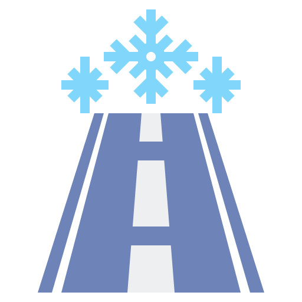

<h5>Roads with bad weather</h5>
<mat-list *ngIf="weatherList.length > 0">
  <mat-list-item *ngFor="let weather of weatherList">
    
    <h3 matLine>Możliwe oblodzenia</h3>
    <p matLine>
      <span>Milestone: {{weather.kmRange}}</span>
    </p>
    <p matLine>
      <span>
        <app-road-list-number *ngFor="let number of weather.number" [number]="number"></app-road-list-number>
      </span>
    </p>
  </mat-list-item>
</mat-list>
<mat-list *ngIf="weatherList.length === 0 || !weatherList">
  <mat-list-item>
    <div>The weather is acceptable.</div>
  </mat-list-item>
</mat-list>
